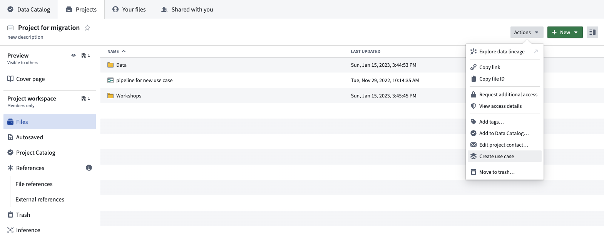
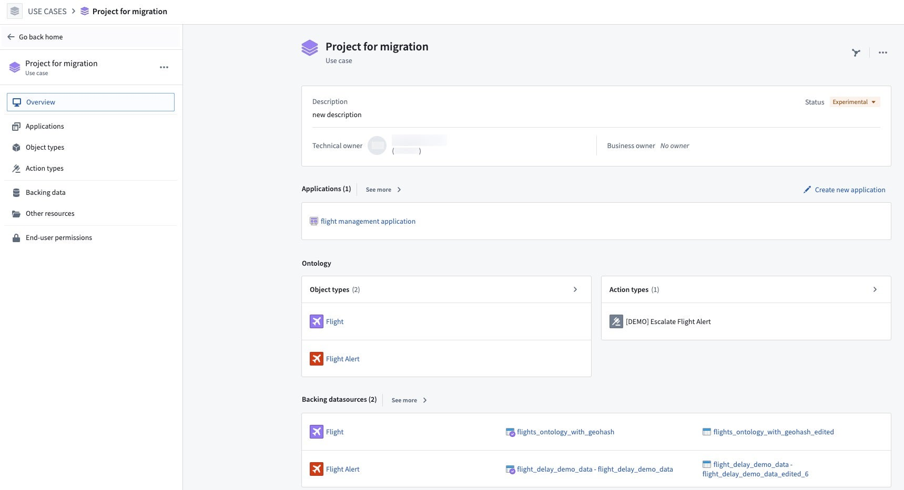

Along with creating a new use case Project, the Use Cases application allows you to migrate an existing Foundry Project to become a use case backing Project.
Follow the steps below to migrate an existing Project to a use case.
First, navigate to the Foundry Project you want to migrate to a use case. From the Foundry navigation sidebar, select Projects & files > Projects to view Projects available to you. Find the Project containing the resources needed for your use case, and open the folder.
From the Project overview page, select Actions > Create use case. This will prompt the start of the migration of the existing Project to a new use case.


Now that you have created a new use case from an existing Project, learn how to add application resources or edit use case metadata.